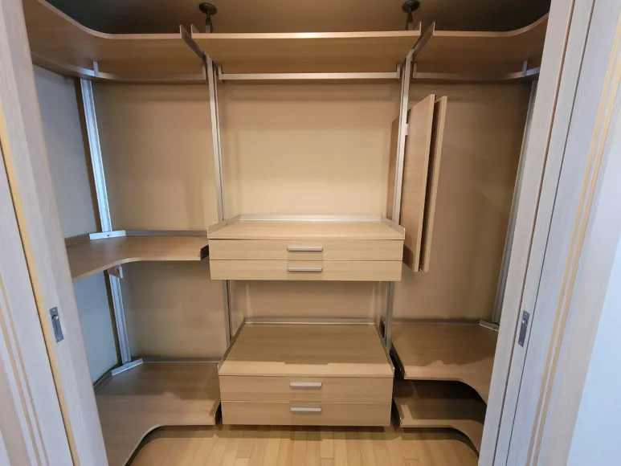

Brand · Casamia
까사미아 드레스룸
이전설치
마감이 고운 제품일수록 해체와 포장에 시간을 더 씁니다.
원목 톤 선반과 곡선 코너 선반은 모서리 마감이 긁히거나 찍히기 쉽습니다. 붙박이장 안쪽처럼 좁은 공간에 설치된 경우에는 꺼내는 과정에서 문틀과 부딪히지 않게 순서를 잘 잡아야 합니다.
코니처는 선반 모서리를 감싸 포장하고, 좁은 공간에서는 부품을 하나씩 빼내며 해체합니다. 새 공간에서도 마감면이 앞으로 오도록 방향을 맞춰 설치합니다. 까사미아 공식 서비스센터가 아닌 가구 이전설치 전문 업체입니다.

Situations
마감을 지키며 옮겨야 하는 경우
붙박이장 안에 설치된 경우
문짝 폭을 확인해 부품을 빼낼 순서를 정합니다.
곡선 코너 선반
모서리 마감이 상하지 않게 따로 포장합니다.
천장 고정 폴
천장면이 눌리지 않도록 천천히 풀어 내립니다.
새 공간이 오픈형일 때
붙박이장 안에 있던 구성을 오픈 드레스룸으로 바꿔 설치합니다.
Checklist
마감 보호를 위해 확인하는 것
| 항목 | 확인 내용 | 필요한 이유 |
|---|---|---|
| 선반 마감 | 원목 톤·도장 여부 | 포장 방법을 정합니다 |
| 코너 선반 | 곡선 모서리 개수 | 따로 보호합니다 |
| 설치 위치 | 붙박이장 안인지 오픈형인지 | 꺼내는 동선을 정합니다 |
| 기존 흠집 | 이미 있는 찍힘·긁힘 | 작업 전 함께 확인합니다 |
| 새 공간 바닥 | 마루·타일 | 바닥 보호 방법을 정합니다 |
Process
마감을 지키는 이전 순서
사진 확인
전체 사진과 선반 모서리 사진을 받습니다.
기존 상태 확인
도착 후 기존 흠집을 함께 확인합니다.
해체·보호 포장
모서리와 마감면을 감싸 포장합니다.
재설치
마감면 방향을 맞춰 다시 설치합니다.
마감 점검
설치 후 마감 상태와 수평을 확인합니다.
FAQ
자주 묻는 질문
운반 중 흠집이 날까 걱정돼요
모서리와 마감면을 감싸 포장해 옮깁니다. 이미 있던 흠집은 작업 전에 함께 확인해 둡니다.
붙박이장 안에서 꺼낼 수 있나요?
조립된 순서의 반대로 하나씩 빼내며 해체합니다. 문 폭이 좁으면 사진으로 먼저 확인해 드립니다.
새 집에는 붙박이장이 없어요
오픈형 드레스룸으로 배치를 바꿔 설치할 수 있습니다. 벽 재질과 천장 높이를 알려주세요.
오래 쓴 선반이 조금 휘었어요
휜 정도를 보고 무게가 덜 걸리는 칸에 쓰는 방법을 안내해 드립니다.
까사미아 매장에 신청하는 건가요?
아닙니다. 코니처에 문자로 직접 상담하시면 됩니다.